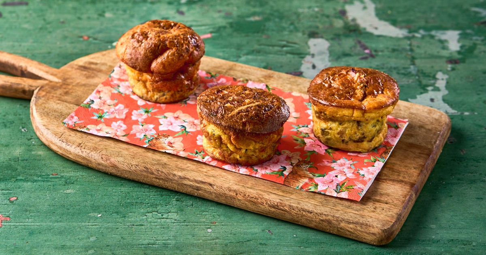

Mini gehaktbroodmuffins met mosterdsaus
Deze mini gehaktbroodmuffins zijn een perfect voorgerecht: lekker, makkelijk te maken en ideaal voor een buffet of borrel.
Ingrediënten
- 200 g gehaktbrood (in kleine blokjes)
- 4 kleine eieren
- 50 ml room
- 1 tl mosterd
- Verse bieslook, fijngehakt
- Zout en peper naar smaak
- Optioneel: geraspte kaas of fijngehakte paprika
Bereidingswijze
- Verwarm de oven voor op 180 graden Celsius.
- Klopt de eieren met room, mosterd, zout en peper in een kom.
- Voeg de gehaktbroodblokjes toe aan het eimengsel en meng goed.
- Verdeel het mengsel in kleine muffinvormpjes of mini ovenschaaltjes.
- Bak 15–20 minuten totdat het eimengsel gestold is en de muffins mooi goudbruin zijn.
- Haal uit de oven en laat iets afkoelen. Garneer met verse bieslook en serveer eventueel met een beetje mosterdsaus of yoghurtdip.

Tip: Voeg geraspte kaas of fijngehakte paprika toe voor extra smaak en kleur. Perfect te combineren met een frisse salade.